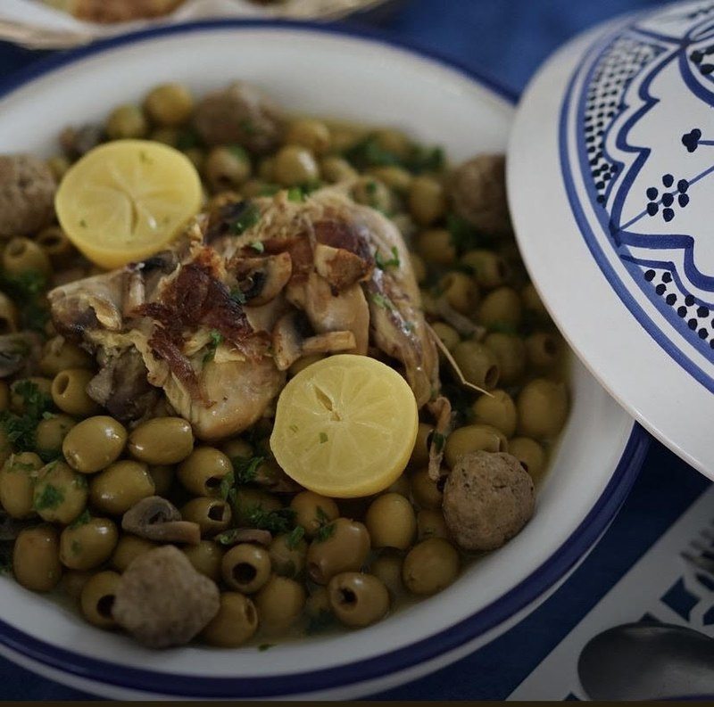
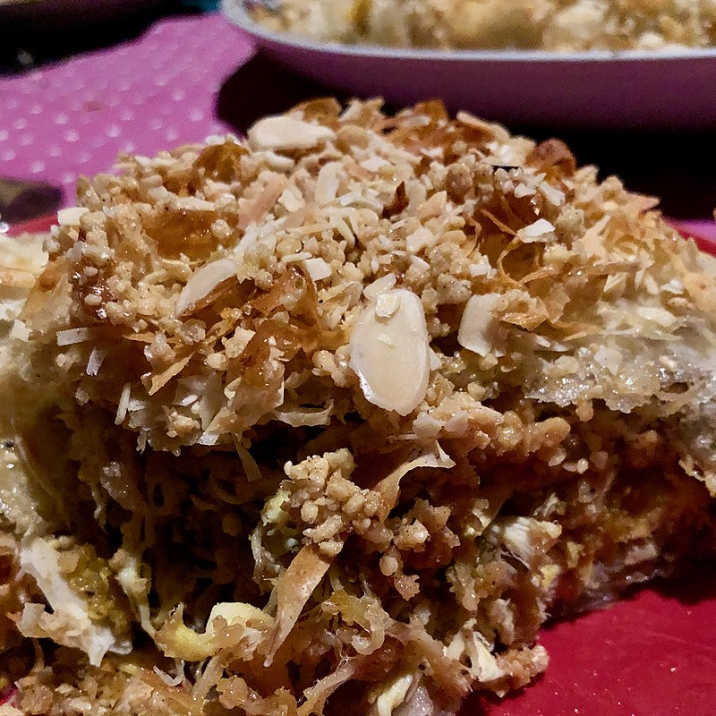
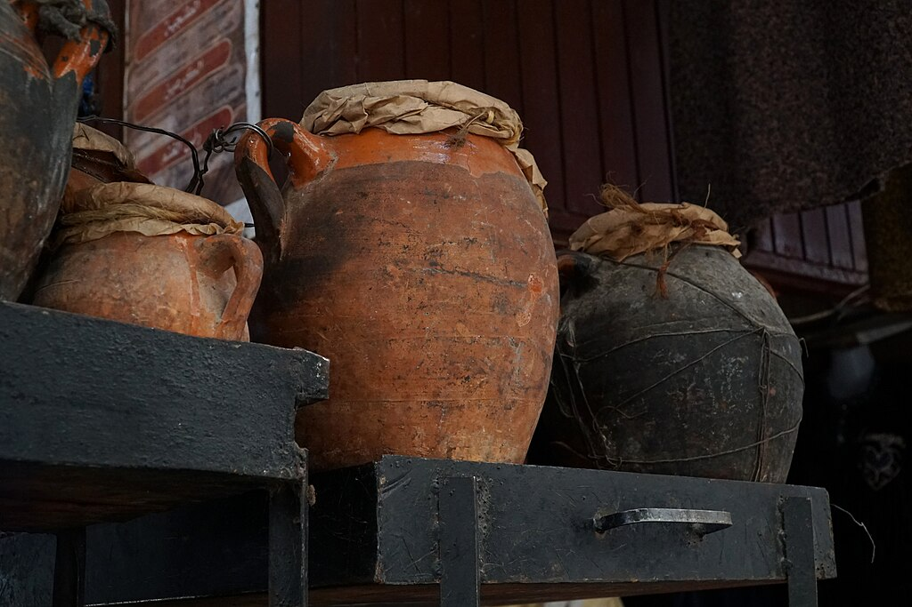

Moroccan couscous is a popular dish in Moroccan
cuisine and is considered one of the national dishes of Morocco.
It is a flavorful and hearty dish that consists of small steamed
balls of semolina wheat, also known as couscous, served with a
variety of vegetables and meats.

Moroccan tajine dishes are slow-cooked savory
stews,typically made with sliced meat, poultry, together with
vegetables. Spices, nuts, and dried fruits are also used.
Common spices include ginger, cumin,
turmeric, cinnamon, and saffron. Paprika and chili are used
in vegetable tajines. The sweet and sour combination is common
in tajine dishes like lamb with prunes and spices.

Poultry pastilla is traditionally made of squab
'fledgling pigeons' and shredded chicken.
It combines sweet and salty flavours; crisp layers of the crêpe-like
werqa dough, savory meat slow-cooked in broth and spices and then
shredded, and a crunchy layer
of toasted and ground almonds, cinnamon, and sugar.

Tanjia is prepared with lamb shank or any other meat
of choice, one or more preserved lemons, fresh whole cumin, garlic,
and saffron melted in water and two tablespoons of olive oil.
All the ingredients are put in an amphora that is covered with
sealed parchment paper,
placed in the embers or the oven and slow cooked for hours..

Rfissa is an Arab Moroccan dish
and is served during various traditional celebrations.It is
traditionally served with chicken and lentils and fenugreek
seeds , msemmen, meloui and the spices blend ras el hanout.